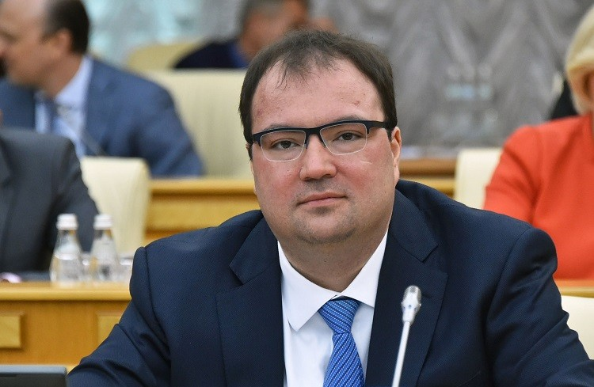
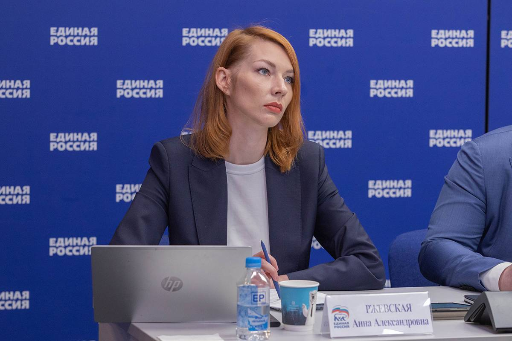

Мержоев Руслан Ахмедович
40 лет, занимает должность министра IT-совета.

Мержоев Борис Джамбулатович
45 лет, является заместителем министра IT-совета.

Картоева Маржан Джамаловна
35 лет, является еще одним заместителем министра IT-совета.